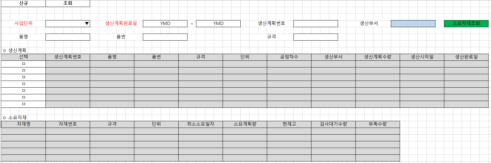

1. 생산계획별소요자재조회 화면 수정 개발
2. 상단시트(생산계획)
1) 자재소요생성여부, 대표구매요청번호 삭제 (IsMRPReg, POReqNo 삭제)
3. 하단시트(소요자재)
1) 안전재고, 출고예정량, 입고예정량, 구매요청수량 컬럼 삭제 (SafeQty, OutExpQty, InExpQty, POReqQty)
2) 컬럼추가
- 검사대기수량 : 구매납품, 외주납품, 생산실적건 중 검사구분이 미검사인 수량 조회 (현재일로부터 3개월전 구매납품, 외주납품, 생산실적 건부터 조회)
- 부족수량 : 소요계획량 - (현재고+검사대기수량)
출처: \<http://61.250.183.6:8100/Page/Open/24428/100101/0/18820244>